Bu Tarifle Artık Herkes Yapabilecek: Mantı Tarifi
Mantı Tarifi İçin Malzemeler
Hamuru için:
-
- 3 su bardağı un
- 1 su bardağı ılık su
- 1 adet yumurta
- 1 çay kaşığı tuz
Harcı için:
-
- 250 gram kıyma
- 1 adet orta boy kuru soğan
- 1 çay kaşığı tuz
- 1/2 çay kaşığı karabiber
- 1/2 çay kaşığı pul biber
Sosu için:
-
- 2 yemek kaşığı tereyağı
- 2 yemek kaşığı salça
Üzeri için:
-
- 1 kase sarımsaklı yoğurt
- 1 çay kaşığı nane
- 1/2 çay kaşığı sumak
- 1 çay kaşığı pul biber
Mantı Tarifi Nasıl Yapılır?
-
3 su bardağı unu bir yoğurma kabına boşaltın, ortasını açıp 1 adet yumurta, tuz ve 1 su bardağı ılık suyu ekleyip yoğurun.
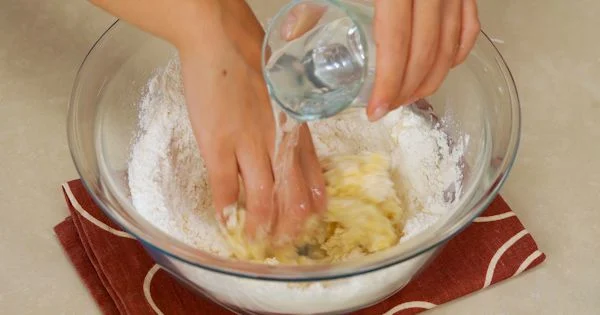 -
Ele yapışmayan, esnek bir hamur elde edince, üzerini kapatarak dinlenmeye bırakın.
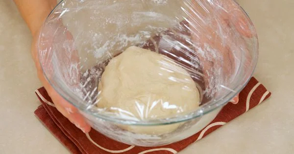 -
İç malzeme için, 1 adet kuru soğanı rendeleyin. 250 gram kıymayı soğana ekleyin. Daha sonra, karabiber, tuz ve pul biber ekleyerek güzelce yoğurun.
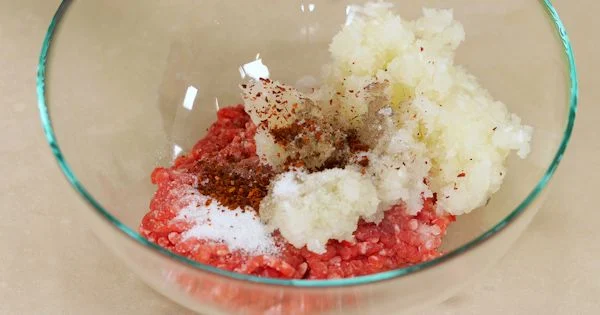 -
Hamuru bezelere ayırın.
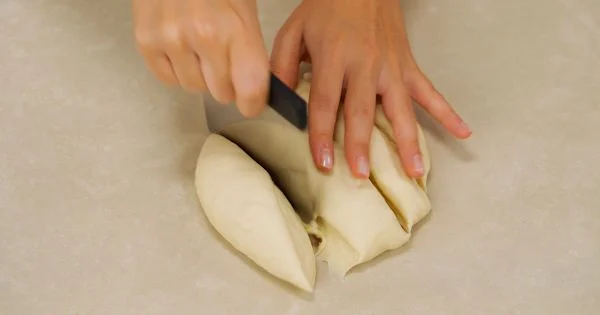 -
Her bezeyi oklavayla hazır yufkadan biraz kalın bir şekilde açın.
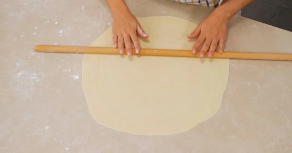 -
Açtığınız yufkayı kareler şeklinde kesin.
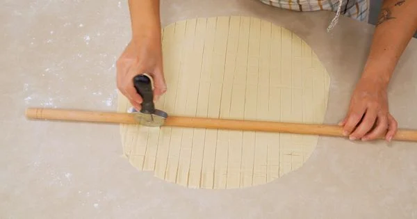 -
Her karenin ortasına kıymalı harçtan küçük bir parça yerleştirin.
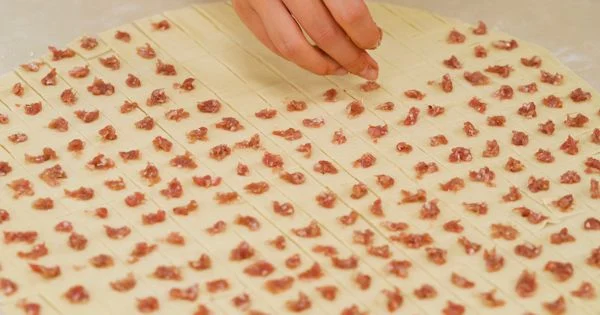 -
Bohça şeklinde kapatın.
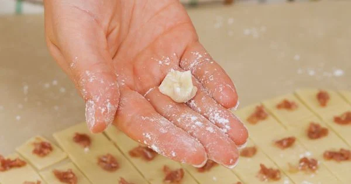 -
Derin bir tencereye su ekleyip kaynatın ve mantıları yaklaşık 20 dakika pişirin.
-
Sosu için bir kapta 2 yemek kaşığı tereyağı eritin. Eriyen tereyağına 2 yemek kaşığı domates salçası ekleyip kavurun.
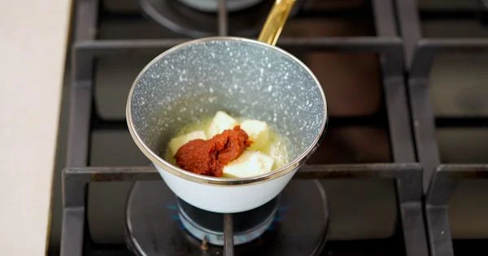 -
Pişen mantının suyuyla salçayı biraz açıp birkaç dakika kaynatın.
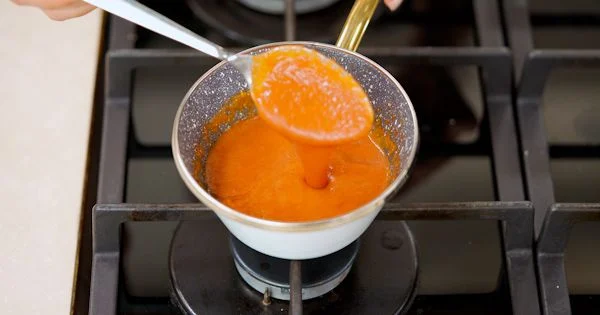 -
Mantıyı suyunu süzerek servis tabağına aldıktan sonra üzerine sarımsaklı yoğurt dökün. Üzerine hazırladığınız sosu döktükten sonra kuru nane, sumak ve pul biber ekleyerek servis edebilirsiniz.
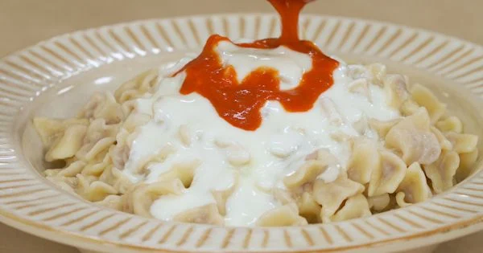 -
Mantı hazır! Afiyet olsun.
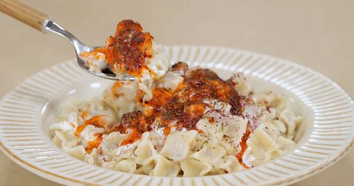
Yorumlar